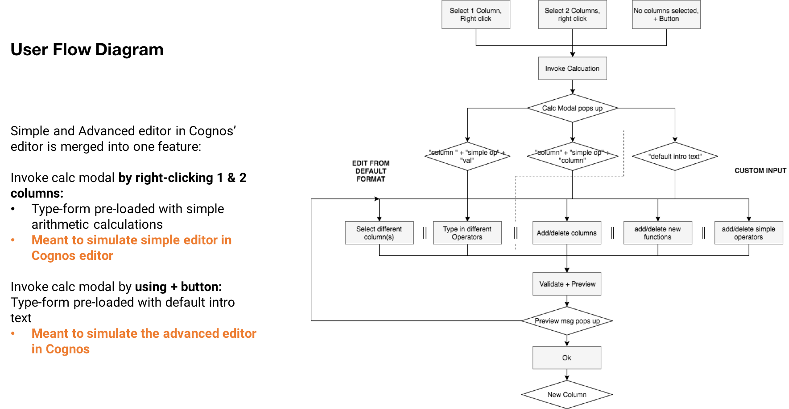

IBM Summer 2017 Internship
Expression Editor
SOLUTIONS FOR CREATING CALCULATED FIELDS FOR ENTERPRISE ANALYTICS SOFTWARE
IBM DESIGN TEAM:
Tedford Chan, Kevin Grignon, Yasmine Taha, Blair Moxon, Liam Kendall, Ilse Breedvelt, Jen Martin, Zoe St-Aubin, Cate Wilcox, Kim Vonder Haar, Christopher Ly
THE CHALLENGE:
There is a current gap in experience between preparing and visualizing the data in IBM Business Analytics software. Specifically for creating a new calculated column, the current solutions are clunky and requires a steep learning curve. Thus, users tend to switch back to familiar toolsets, such as Microsoft Excel, to edit their .cvs or .xls files. The design intent is to gap this experience, as to retain users within the BA toolset. The new solution must encompass a users of all proficiency levels, as identified by the personas.
MY CONTRIBUTIONS:
- Identify and define design intent, necessary features, and key performance indicators
- Conduct competitive analysis and trade-off analysis
- Create task flow, low-fidelity, mid-fidelity, and high-fidelity wireframes/mockups
- Create functional prototype using HTML, CSS, JS
- conduct usability tests with said prototypes in proving hypothesized design intents
- Establish new visual elements to append to IBM Business Analytics Design Guide, upon proposing new user cases supported by mentioned user research
*I am fortunately given permission to publicly share some of my work. Specific information and terms are withheld.
IBM BUSINESS ANALYTICS:
IBM Business Analytics software provides corporations intelligence and performance management tools to analyze gathered big data. It gives corporations the ability to understand the data and help them predict trends in aiding their decisions.
IBM Business Analytics unit is composed of three main brands/products:
- Cognos Analytics: Cognos Analytics provides IT and Data Scientists the platform to massage and cleanse big data, and empowers business users to create dashboards and reports from that set of data.
- Watson Analytics: Helps business users gain insight into a dataset with predictive analytics and automated data visualizations. Meant for users that dive into a set of data without a specific question in mind.
- Watson Analytics for Social Media: Software solution to discover hidden insights from social media data sources. Uses Watson’s predictive analytics and automated data visualizations.
- Planning Analytics: Enterprise Planning software to help the business’ planning cycle. Enables users to collaborate on plans, budgets, and forecasts.
WHAT IS AN EXPRESSION EDITOR?
Big data are organized into a series of columns, each column with a heading and its data set. Examples of a column can be “price”, “cost”, and “sales”. If one would like to calculate revenue, for example, an expression editor must be used to create a new, calculated column. One would input into the expression editor to obtain “revenue”
“price” * “sales” – “cost”
Note that the above expression is considered a simple calculation. Use cases involving advanced users may include complex, multiline expressions. To summarize, it is simply Microsoft Excel with data only along the x axis (Excel is x and y).
PRODUCT COMPARISONS & COMPETITIVE ANALYSIS
-
IBM Cognos Analytics
Primary issue with Cognos’ editor is the inconsistency in experience between a basic arithmetic calculation and the advanced editor dialog. Furthermore, tested users prefers an experience like Excel’s, as it is their default toolset for creating a calculation. - IBM Watson Analytics
Upon feedback from Cognos’ users, Watson Analytics follows the styling of excel for their expression editor. However, like Excel, the one line format of the editor typeform does not support advanced multi-line calculations. Multi-line calculations is a frequent use case scenario for advanced users. Furthermore, the drop down menus at the top cannot be used in conjunction with the editor. This takes away the support experience the tool can offer to beginner users in learning or recalling functions, calculations, etc. - Microsoft Excel
Excel offers powerful scripting features and calculations. It is the most popular toolset, and has set many worksheet interaction standards. This is why many users prefers an experience similar to Excel’s. However, calculation expression input relies predominantly on keyboard input with scripting language, thus requires a steeper learning curve. - Apple Numbers
Most notable feature of Numbers is their intuitive auto-complete chicklets. It is a visual way to display script, much like Lego blocks. The chicklets offers good embedding of explanations and auto formatting of advanced functions. Thus, the onboarding is more pleasant and requires less steep of a learning curve. Furthermore, this offers alternate input with the mouse.The list of available functions with accompanying explanations is also an advantage IBM should emulate. - Tableau
The nature and features of Tableau is most similar to IBM BA. It offers good explanations of functions in the list at the side panel, with intuitive type ahead and auto completion. However, the scripting syntax is similar to coding with color-coding and brackets (ie. [, (, {). This may be preferred by a data scientist users, but will be too complicated for business users. Business users will prefer something more visual such as Apple Numbers.
FEATURE GOALS
Audience Proficiency Based off of Keyboard vs. Mouse Inputs
It is hypothesized at the beginning of the project (and later proven during user-testing sessions), that users from a data science background prefers pure keyboard input and scripting syntax, while business users prefer mouse inputs and more visual representations of scripting syntax.
Below is a comparison of the previously examined competitors:
Experience Roadmap Goal for Sales User
IBM should ideally encompass a range users with different proficiencies. It should compete at the same proficiency compliance scale as Numbers and Tableau in terms of keyboard to mouse input.
The typical user's skill level in programming skills is low, so will start out relying on more embedded support features such as hints, auto-complete, and mouse inputs. The goal is to have the embedded support features ease and onboard her during her initial exposure to the toolset, and help her grow into a proficient business power user.
SOLUTION
Based on previous analysis and research, the following is expected of the new expression editor feature:
- Default experience to focus on initial simple calculation UX for Ricki
- Merging of simple & advanced editor for user scalability
- Targeted business user will become more proficient with keyboard input and shortcuts with use
- Targeted business user may become the business power user (secondary target: the business analyst)
- Can also encompasses data scientist user's proficiency (tertiary target)
Below is snippets of the final solution prepared for hand-off. This is after 3 major iterations, and 3 UR testing sessions.



The functional prototype is currently unavailable for public viewing.